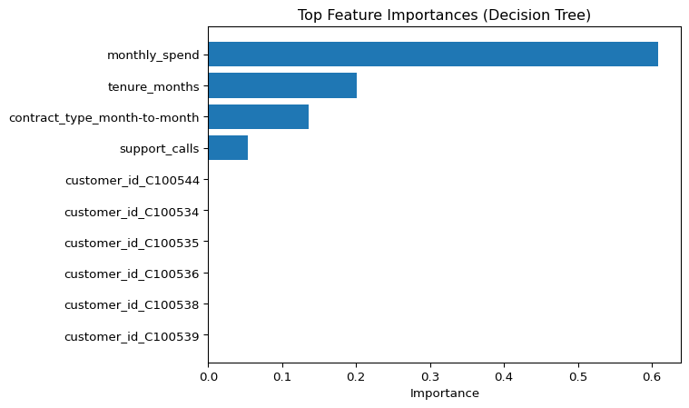

import pandas as pd
df = pd.read_csv("data/ml-ready/cdi-customer-churn.csv")
X = df.drop(columns="churn")
y = df["churn"]Feature Importance and Interpretation
Interpretation Is Not the Same as Prediction
A model can predict well and still be poorly understood.
Interpretation asks different questions:
- Which features does the model rely on?
- How sensitive are predictions to each feature?
- Are relationships stable or dataset-specific?
Interpretation is useful, but it requires caution.
Feature importance is not causality.
Load Data
Train/Test Split
from sklearn.model_selection import train_test_split
X_train, X_test, y_train, y_test = train_test_split(
X,
y,
test_size=0.2,
random_state=42,
stratify=y
)Define Preprocessing
from sklearn.compose import ColumnTransformer
from sklearn.preprocessing import OneHotEncoder, StandardScaler
from sklearn.pipeline import Pipeline
numeric_features = X.select_dtypes(include=["int64", "float64"]).columns
categorical_features = X.select_dtypes(include=["object"]).columns
numeric_transformer = Pipeline(
steps=[("scaler", StandardScaler())]
)
categorical_transformer = Pipeline(
steps=[("encoder", OneHotEncoder(handle_unknown="ignore"))]
)
preprocessor = ColumnTransformer(
transformers=[
("num", numeric_transformer, numeric_features),
("cat", categorical_transformer, categorical_features)
]
)Train a Model
For feature importance, tree-based models are convenient because they provide built-in importances.
from sklearn.tree import DecisionTreeClassifier
tree = Pipeline(
steps=[
("preprocessor", preprocessor),
("classifier", DecisionTreeClassifier(
max_depth=4,
min_samples_leaf=10,
random_state=42
))
]
)
tree.fit(X_train, y_train)Pipeline(steps=[('preprocessor',
ColumnTransformer(transformers=[('num',
Pipeline(steps=[('scaler',
StandardScaler())]),
Index(['tenure_months', 'monthly_spend', 'support_calls'], dtype='str')),
('cat',
Pipeline(steps=[('encoder',
OneHotEncoder(handle_unknown='ignore'))]),
Index(['customer_id', 'contract_type', 'autopay'], dtype='str'))])),
('classifier',
DecisionTreeClassifier(max_depth=4, min_samples_leaf=10,
random_state=42))])In a Jupyter environment, please rerun this cell to show the HTML representation or trust the notebook. On GitHub, the HTML representation is unable to render, please try loading this page with nbviewer.org.
Parameters
Parameters
Index(['tenure_months', 'monthly_spend', 'support_calls'], dtype='str')
Parameters
Index(['customer_id', 'contract_type', 'autopay'], dtype='str')
Parameters
Parameters
Built-in Feature Importance (Expanded Features)
Decision trees provide a feature importance score.
Because one-hot encoding expands categorical variables into multiple columns, we first build the expanded feature names.
import numpy as np
ohe = (
tree.named_steps["preprocessor"]
.named_transformers_["cat"]
.named_steps["encoder"]
)
cat_names = ohe.get_feature_names_out(categorical_features)
expanded_feature_names = np.concatenate([numeric_features, cat_names])
len(expanded_feature_names)648Now extract importance values from the fitted tree.
importances = tree.named_steps["classifier"].feature_importances_
imp_df = pd.DataFrame({
"feature": expanded_feature_names,
"importance": importances
}).sort_values("importance", ascending=False)
imp_df.head(10)| feature | importance | |
|---|---|---|
| 1 | monthly_spend | 0.609083 |
| 0 | tenure_months | 0.201316 |
| 643 | contract_type_month-to-month | 0.136050 |
| 2 | support_calls | 0.053552 |
| 435 | customer_id_C100544 | 0.000000 |
| 427 | customer_id_C100534 | 0.000000 |
| 428 | customer_id_C100535 | 0.000000 |
| 429 | customer_id_C100536 | 0.000000 |
| 430 | customer_id_C100538 | 0.000000 |
| 431 | customer_id_C100539 | 0.000000 |
Plot the top features.
import matplotlib.pyplot as plt
top = imp_df.head(10).iloc[::-1]
fig, ax = plt.subplots()
ax.barh(top["feature"], top["importance"])
ax.set_xlabel("Importance")
ax.set_title("Top Feature Importances (Decision Tree)")
plt.show()
Permutation Importance (Original Features)
Permutation importance answers a different question:
How much does performance drop if we shuffle one input feature?
When we compute permutation importance on a pipeline, the permutation happens on the original input columns, not on expanded one-hot columns.
That means the importance results align with:
X.columnsnot with expanded feature names.
from sklearn.inspection import permutation_importance
result = permutation_importance(
tree,
X_test,
y_test,
n_repeats=10,
random_state=42,
scoring="f1"
)
perm_df = pd.DataFrame({
"feature": X.columns,
"importance_mean": result.importances_mean,
"importance_std": result.importances_std
}).sort_values("importance_mean", ascending=False)
perm_df.head(10)| feature | importance_mean | importance_std | |
|---|---|---|---|
| 2 | monthly_spend | 0.051062 | 0.018469 |
| 3 | support_calls | 0.020419 | 0.014855 |
| 4 | contract_type | 0.014887 | 0.007450 |
| 1 | tenure_months | 0.009057 | 0.011963 |
| 0 | customer_id | 0.000000 | 0.000000 |
| 5 | autopay | 0.000000 | 0.000000 |
Plot the permutation importances.
top_p = perm_df.head(10).iloc[::-1]
fig, ax = plt.subplots()
ax.barh(top_p["feature"], top_p["importance_mean"])
ax.set_xlabel("Mean importance (F1 drop)")
ax.set_title("Top Permutation Importances (Original Features)")
plt.show()
Interpreting Importances Responsibly
Important does not mean causal.
A feature can appear important because:
- it is correlated with the true driver
- it encodes historical behavior
- it captures an operational artifact
- it is specific to this dataset
Use feature importance as a diagnostic tool.
Not as a causal claim.
Looking Ahead
In the next lesson, we close the free track.
We summarize what you can now do confidently, and what requires deeper study.